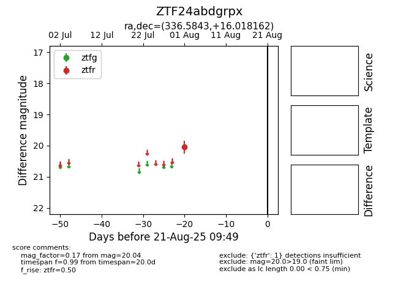

Target ZTF24abdgrpx at 2025-08-21 09:49, see:
FINK: fink-portal.org/ZTF24abdgrpx
Lasair: lasair-ztf.lsst.ac.uk/objects/ZTF24abdgrpx
ALeRCE: alerce.online/object/ZTF24abdgrpx
alt names
ZTF24abdgrpx (ztf,alerce)
coordinates:
equatorial (ra, dec) = (336.5843,+16.01816)
galactic (l, b) = (79.4149,-34.31986)
photometry
last ztfr=20.04
1 ztfr detections
